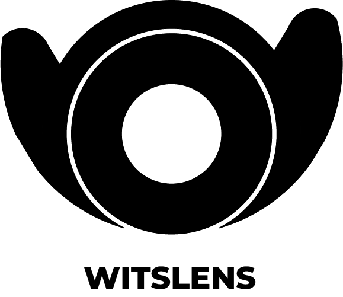

Witslens
Exploring learning through a clear lens.

TechCurious
Answering your spoken and unspoken technology curiosity.
Oluwole is a creative problem-solver with a strong technical background. He brings a unique blend of design thinking and technical expertise to deliver impactful web solutions across various industries, including manufacturing, agriculture, technology, and education.
Oluwole's experience encompasses not only developing solutions but also empowering others. He has trained professionals in web development, data analytics and machine learning, helping them extract valuable insights to inform strategic decision-making.
With his excellent writing skills, Oluwole can effectively communicate complex ideas and craft compelling narratives that position organizations for success in the digital age.
With efficient tools like Microsoft Excel, Microsoft Power BI, Salesforce Tableau, Jupyter Notebook, and Google Colab; drawing actionable insights from data has never been easier.
Oluwole works with individuals and brands to make informed decisions by exploring their primary data through up-to-date techniques. He maps this to in-depth secondary research and current global trends.
He is committed to seeing economically active professionals culture their tech inclinations into marketable skills through Techcurious.
His strong foundation in LAMP and MERN stacks allows him to integrate with existing data infrastructure. Expertise in data visualization tools, coupled with a talent for secondary and primary research, empowers him to transform raw data into actionable insights and positions him to excel as a business intelligence expert, providing clear and impactful information to drive strategic decision-making.
Exploring learning through a clear lens.
Answering your spoken and unspoken technology curiosity.
oluwolefasakin007@gmail.com